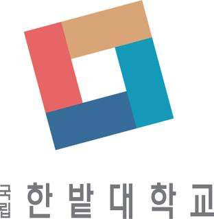
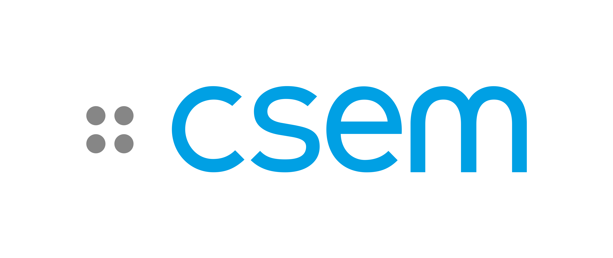

<!DOCTYPE html>
<html>
<head>
    
    <meta http-equiv="content-type" content="text/html; charset=UTF-8" />
    
        <script>
            L_NO_TOUCH = false;
            L_DISABLE_3D = false;
        </script>
    
    <style>html, body {width: 100%;height: 100%;margin: 0;padding: 0;}</style>
    <style>#map {position:absolute;top:0;bottom:0;right:0;left:0;}</style>
    <script src="https://cdn.jsdelivr.net/npm/leaflet@1.9.3/dist/leaflet.js"></script>
    <script src="https://code.jquery.com/jquery-3.7.1.min.js"></script>
    <script src="https://cdn.jsdelivr.net/npm/bootstrap@5.2.2/dist/js/bootstrap.bundle.min.js"></script>
    <script src="https://cdnjs.cloudflare.com/ajax/libs/Leaflet.awesome-markers/2.0.2/leaflet.awesome-markers.js"></script>
    <link rel="stylesheet" href="https://cdn.jsdelivr.net/npm/leaflet@1.9.3/dist/leaflet.css"/>
    <link rel="stylesheet" href="https://cdn.jsdelivr.net/npm/bootstrap@5.2.2/dist/css/bootstrap.min.css"/>
    <link rel="stylesheet" href="https://netdna.bootstrapcdn.com/bootstrap/3.0.0/css/bootstrap-glyphicons.css"/>
    <link rel="stylesheet" href="https://cdn.jsdelivr.net/npm/@fortawesome/fontawesome-free@6.2.0/css/all.min.css"/>
    <link rel="stylesheet" href="https://cdnjs.cloudflare.com/ajax/libs/Leaflet.awesome-markers/2.0.2/leaflet.awesome-markers.css"/>
    <link rel="stylesheet" href="https://cdn.jsdelivr.net/gh/python-visualization/folium/folium/templates/leaflet.awesome.rotate.min.css"/>
    
            <meta name="viewport" content="width=device-width,
                initial-scale=1.0, maximum-scale=1.0, user-scalable=no" />
            <style>
                #map_3ca3ea9da87e0ec25368815f99505c03 {
                    position: relative;
                    width: 100.0%;
                    height: 100.0%;
                    left: 0.0%;
                    top: 0.0%;
                }
                .leaflet-container { font-size: 1rem; }
            </style>
        
    <script src="https://unpkg.com/leaflet-control-geocoder/dist/Control.Geocoder.js"></script>
    <link rel="stylesheet" href="https://unpkg.com/leaflet-control-geocoder/dist/Control.Geocoder.css"/>
    <script src="https://cdn.jsdelivr.net/npm/leaflet.fullscreen@3.0.0/Control.FullScreen.min.js"></script>
    <link rel="stylesheet" href="https://cdn.jsdelivr.net/npm/leaflet.fullscreen@3.0.0/Control.FullScreen.css"/>
<link rel="stylesheet" type="text/css" href="./emoji.css"></head>
<body>
    
    <style>.leaflet-container { height: 100% !important; }</style>
    
            <div class="folium-map" id="map_3ca3ea9da87e0ec25368815f99505c03" ></div>
        
</body>
<script>
    
    
            var map_3ca3ea9da87e0ec25368815f99505c03 = L.map(
                "map_3ca3ea9da87e0ec25368815f99505c03",
                {
                    center: [50.0, 10.0],
                    crs: L.CRS.EPSG3857,
                    zoom: 2,
                    zoomControl: true,
                    preferCanvas: true,
                    lang: "en",
                }
            );

            

        
    
            var tile_layer_37e598b540b9f5e51f8b4b04341c7577 = L.tileLayer(
                "https://{s}.basemaps.cartocdn.com/light_all/{z}/{x}/{y}{r}.png",
                {"attribution": "\u0026copy; \u003ca href=\"https://www.openstreetmap.org/copyright\"\u003eOpenStreetMap\u003c/a\u003e contributors \u0026copy; \u003ca href=\"https://carto.com/attributions\"\u003eCARTO\u003c/a\u003e", "detectRetina": false, "maxNativeZoom": 20, "maxZoom": 20, "minZoom": 0, "noWrap": false, "opacity": 1, "subdomains": "abcd", "tms": false}
            );
        
    
            tile_layer_37e598b540b9f5e51f8b4b04341c7577.addTo(map_3ca3ea9da87e0ec25368815f99505c03);
        
    
            var marker_bbce87f39eec3236950de0eb3b19345e = L.marker(
                [51.99887857685981, 4.373485475717208],
                {}
            ).addTo(map_3ca3ea9da87e0ec25368815f99505c03);
        
    
            var icon_2d24671bcd43cc1471f0ed56b00e9f44 = L.AwesomeMarkers.icon(
                {"extraClasses": "fa-rotate-0", "icon": "fa-graduation-cap", "iconColor": "white", "markerColor": "gray", "prefix": "fa"}
            );
            marker_bbce87f39eec3236950de0eb3b19345e.setIcon(icon_2d24671bcd43cc1471f0ed56b00e9f44);
        
    
        var popup_d3cd3ff2b1def198666d52b096e65d9c = L.popup({"maxWidth": "100%"});

        
            
                var html_14f77903bf670f4b2bd6027b18269f18 = $(`<div id="html_14f77903bf670f4b2bd6027b18269f18" style="width: 100.0%; height: 100.0%;"><a href = "https://www.tudemi.com" target=_blank></a></div>`)[0];
                popup_d3cd3ff2b1def198666d52b096e65d9c.setContent(html_14f77903bf670f4b2bd6027b18269f18);
            
        

        marker_bbce87f39eec3236950de0eb3b19345e.bindPopup(popup_d3cd3ff2b1def198666d52b096e65d9c)
        ;

        
    
    
            marker_bbce87f39eec3236950de0eb3b19345e.bindTooltip(
                `<div>
                     <div style="display: flex; align-items: center; height: 100%;"><div style="text-align: left; font-family: Trebuchet MS; font-size: 1.5em;"><b>Chang Gao</b><br>Assistant Professor<br>TU Delft<br>Netherlands <span class="emoji">🇳🇱</span></div></div>
                 </div>`,
                {"sticky": true}
            );
        
    
            var marker_927b49a813affdfd1a91c4ec59026e4a = L.marker(
                [52.16944708942925, 4.456637141409791],
                {}
            ).addTo(map_3ca3ea9da87e0ec25368815f99505c03);
        
    
            var icon_f6ba50998f8891bce28c287720c4fb86 = L.AwesomeMarkers.icon(
                {"extraClasses": "fa-rotate-0", "icon": "fa-graduation-cap", "iconColor": "white", "markerColor": "gray", "prefix": "fa"}
            );
            marker_927b49a813affdfd1a91c4ec59026e4a.setIcon(icon_f6ba50998f8891bce28c287720c4fb86);
        
    
        var popup_de9779d8477bd37472b06dc8a00b2d27 = L.popup({"maxWidth": "100%"});

        
            
                var html_bad8804a6975a95428afab5c909122f4 = $(`<div id="html_bad8804a6975a95428afab5c909122f4" style="width: 100.0%; height: 100.0%;"><a href = "https://sites.google.com/view/qinyu/" target=_blank></a></div>`)[0];
                popup_de9779d8477bd37472b06dc8a00b2d27.setContent(html_bad8804a6975a95428afab5c909122f4);
            
        

        marker_927b49a813affdfd1a91c4ec59026e4a.bindPopup(popup_de9779d8477bd37472b06dc8a00b2d27)
        ;

        
    
    
            marker_927b49a813affdfd1a91c4ec59026e4a.bindTooltip(
                `<div>
                     <div style="display: flex; align-items: center; height: 100%;"><div style="text-align: left; font-family: Trebuchet MS; font-size: 1.5em;"><b>Qinyu Chen</b><br>Assistant Professor<br>Leiden University<br>Netherlands <span class="emoji">🇳🇱</span></div></div>
                 </div>`,
                {"sticky": true}
            );
        
    
            var marker_3011f291ab57184e71d06281de7be550 = L.marker(
                [36.352087, 127.301388],
                {}
            ).addTo(map_3ca3ea9da87e0ec25368815f99505c03);
        
    
            var icon_c2db1a08db1f073f1c5be241e898eb4f = L.AwesomeMarkers.icon(
                {"extraClasses": "fa-rotate-0", "icon": "fa-graduation-cap", "iconColor": "white", "markerColor": "gray", "prefix": "fa"}
            );
            marker_3011f291ab57184e71d06281de7be550.setIcon(icon_c2db1a08db1f073f1c5be241e898eb4f);
        
    
        var popup_895620d6bbd7484da5df28bb014b77e0 = L.popup({"maxWidth": "100%"});

        
            
                var html_81e0ac7da94028decb3ba2e9feb51ab8 = $(`<div id="html_81e0ac7da94028decb3ba2e9feb51ab8" style="width: 100.0%; height: 100.0%;"><a href = "https://lab.hanbat.ac.kr/cats/main" target=_blank></a></div>`)[0];
                popup_895620d6bbd7484da5df28bb014b77e0.setContent(html_81e0ac7da94028decb3ba2e9feb51ab8);
            
        

        marker_3011f291ab57184e71d06281de7be550.bindPopup(popup_895620d6bbd7484da5df28bb014b77e0)
        ;

        
    
    
            marker_3011f291ab57184e71d06281de7be550.bindTooltip(
                `<div>
                     <div style="display: flex; align-items: center; height: 100%;"><div style="text-align: left; font-family: Trebuchet MS; font-size: 1.5em;"><b>Youngwoo Ji</b><br>Assistant Professor<br>Hanbat National University<br>South Korea <span class="emoji">🇰🇷</span></div></div>
                 </div>`,
                {"sticky": true}
            );
        
    
            var marker_9ee4a3806a034086969e208b07b6b7fc = L.marker(
                [36.36905994623712, 127.36527975092365],
                {}
            ).addTo(map_3ca3ea9da87e0ec25368815f99505c03);
        
    
            var icon_c3d7732ebfee49553ab6f84d02e191f0 = L.AwesomeMarkers.icon(
                {"extraClasses": "fa-rotate-0", "icon": "fa-graduation-cap", "iconColor": "white", "markerColor": "gray", "prefix": "fa"}
            );
            marker_9ee4a3806a034086969e208b07b6b7fc.setIcon(icon_c3d7732ebfee49553ab6f84d02e191f0);
        
    
        var popup_b2dc3cfd6db1a5e018e4a6f9a8d3bdef = L.popup({"maxWidth": "100%"});

        
            
                var html_5ac9aed0a4c2b4daec94a09283b961ac = $(`<div id="html_5ac9aed0a4c2b4daec94a09283b961ac" style="width: 100.0%; height: 100.0%;"><a href = "http://ssl.kaist.ac.kr" target=_blank></a></div>`)[0];
                popup_b2dc3cfd6db1a5e018e4a6f9a8d3bdef.setContent(html_5ac9aed0a4c2b4daec94a09283b961ac);
            
        

        marker_9ee4a3806a034086969e208b07b6b7fc.bindPopup(popup_b2dc3cfd6db1a5e018e4a6f9a8d3bdef)
        ;

        
    
    
            marker_9ee4a3806a034086969e208b07b6b7fc.bindTooltip(
                `<div>
                     <div style="display: flex; align-items: center; height: 100%;"><div style="text-align: left; font-family: Trebuchet MS; font-size: 1.5em;"><b>Hoi-Jun Yoo</b><br>Professor<br>KAIST<br>South Korea <span class="emoji">🇰🇷</span></div></div>
                 </div>`,
                {"sticky": true}
            );
        
    
            var marker_14db3ee92a4d2b8507968aeea5797697 = L.marker(
                [47.398674219459984, 8.55053897975897],
                {}
            ).addTo(map_3ca3ea9da87e0ec25368815f99505c03);
        
    
            var icon_26a47d428c64494cfb1215461f8e6e67 = L.AwesomeMarkers.icon(
                {"extraClasses": "fa-rotate-0", "icon": "fa-graduation-cap", "iconColor": "white", "markerColor": "gray", "prefix": "fa"}
            );
            marker_14db3ee92a4d2b8507968aeea5797697.setIcon(icon_26a47d428c64494cfb1215461f8e6e67);
        
    
        var popup_0ad88755f19d9f86051e7837606e9bc6 = L.popup({"maxWidth": "100%"});

        
            
                var html_adc115db8ec57e8aeacaced3237762c9 = $(`<div id="html_adc115db8ec57e8aeacaced3237762c9" style="width: 100.0%; height: 100.0%;"><a href = "https://sensors.ini.ch" target=_blank></a></div>`)[0];
                popup_0ad88755f19d9f86051e7837606e9bc6.setContent(html_adc115db8ec57e8aeacaced3237762c9);
            
        

        marker_14db3ee92a4d2b8507968aeea5797697.bindPopup(popup_0ad88755f19d9f86051e7837606e9bc6)
        ;

        
    
    
            marker_14db3ee92a4d2b8507968aeea5797697.bindTooltip(
                `<div>
                     <div style="display: flex; align-items: center; height: 100%;"><div style="text-align: left; font-family: Trebuchet MS; font-size: 1.5em;"><b>Tobi Delbruck, Shih-Chii Liu</b><br>Professors<br>Institute of Neuroinformatics, UZH/ETH Zurich<br>Switzerland <span class="emoji">🇨🇭</span></div></div>
                 </div>`,
                {"sticky": true}
            );
        
    
            var marker_b9f7161baaf91f53712fc3bc85d07be9 = L.marker(
                [47.37773920561239, 8.552812436204693],
                {}
            ).addTo(map_3ca3ea9da87e0ec25368815f99505c03);
        
    
            var icon_779bdf0f4352ef676d9c25dcded23768 = L.AwesomeMarkers.icon(
                {"extraClasses": "fa-rotate-0", "icon": "fa-graduation-cap", "iconColor": "white", "markerColor": "gray", "prefix": "fa"}
            );
            marker_b9f7161baaf91f53712fc3bc85d07be9.setIcon(icon_779bdf0f4352ef676d9c25dcded23768);
        
    
        var popup_35b2fb1bddfdf64e15db957f37e17baa = L.popup({"maxWidth": "100%"});

        
            
                var html_6d9b5c134dfffe7879398cb5dab2a7c5 = $(`<div id="html_6d9b5c134dfffe7879398cb5dab2a7c5" style="width: 100.0%; height: 100.0%;"><a href = "https://circuit.ee.ethz.ch" target=_blank></a></div>`)[0];
                popup_35b2fb1bddfdf64e15db957f37e17baa.setContent(html_6d9b5c134dfffe7879398cb5dab2a7c5);
            
        

        marker_b9f7161baaf91f53712fc3bc85d07be9.bindPopup(popup_35b2fb1bddfdf64e15db957f37e17baa)
        ;

        
    
    
            marker_b9f7161baaf91f53712fc3bc85d07be9.bindTooltip(
                `<div>
                     <div style="display: flex; align-items: center; height: 100%;"><div style="text-align: left; font-family: Trebuchet MS; font-size: 1.5em;"><b>Taekwang Jang</b><br>Assistant Professor<br>ETH Zurich<br>Switzerland <span class="emoji">🇨🇭</span></div></div>
                 </div>`,
                {"sticky": true}
            );
        
    
            var marker_63e418cf823040760c9bed91e57ec08f = L.marker(
                [60.187153, 24.819305],
                {}
            ).addTo(map_3ca3ea9da87e0ec25368815f99505c03);
        
    
            var icon_f95695a3fa828e8aaea65694ec0419fa = L.AwesomeMarkers.icon(
                {"extraClasses": "fa-rotate-0", "icon": "fa-graduation-cap", "iconColor": "white", "markerColor": "gray", "prefix": "fa"}
            );
            marker_63e418cf823040760c9bed91e57ec08f.setIcon(icon_f95695a3fa828e8aaea65694ec0419fa);
        
    
        var popup_e9efb9708bc0f1c80148d8190eb1a5f3 = L.popup({"maxWidth": "100%"});

        
            
                var html_5d4299d8dcabaec73f11233706ed672d = $(`<div id="html_5d4299d8dcabaec73f11233706ed672d" style="width: 100.0%; height: 100.0%;"><a href = "https://metka.aalto.fi" target=_blank></a></div>`)[0];
                popup_e9efb9708bc0f1c80148d8190eb1a5f3.setContent(html_5d4299d8dcabaec73f11233706ed672d);
            
        

        marker_63e418cf823040760c9bed91e57ec08f.bindPopup(popup_e9efb9708bc0f1c80148d8190eb1a5f3)
        ;

        
    
    
            marker_63e418cf823040760c9bed91e57ec08f.bindTooltip(
                `<div>
                     <div style="display: flex; align-items: center; height: 100%;"><div style="text-align: left; font-family: Trebuchet MS; font-size: 1.5em;"><b>Marko Kosunen</b><br>Associate Professor<br>Aalto University<br>Finland <span class="emoji">🇫🇮</span></div></div>
                 </div>`,
                {"sticky": true}
            );
        
    
            var marker_864b6e8d93a98cf0a5477db375fefe88 = L.marker(
                [24.52528093638531, 54.433230380907695],
                {}
            ).addTo(map_3ca3ea9da87e0ec25368815f99505c03);
        
    
            var icon_966ecab6b80806032ac3ff0bc3a790e6 = L.AwesomeMarkers.icon(
                {"extraClasses": "fa-rotate-0", "icon": "fa-graduation-cap", "iconColor": "white", "markerColor": "gray", "prefix": "fa"}
            );
            marker_864b6e8d93a98cf0a5477db375fefe88.setIcon(icon_966ecab6b80806032ac3ff0bc3a790e6);
        
    
        var popup_b99baa2a9b36f56814957d74971adf7c = L.popup({"maxWidth": "100%"});

        
            
                var html_076e6f87c0a7920237dd5ccfdc209ef6 = $(`<div id="html_076e6f87c0a7920237dd5ccfdc209ef6" style="width: 100.0%; height: 100.0%;"><a href = "https://wp.nyu.edu/sohmyung/" target=_blank></a></div>`)[0];
                popup_b99baa2a9b36f56814957d74971adf7c.setContent(html_076e6f87c0a7920237dd5ccfdc209ef6);
            
        

        marker_864b6e8d93a98cf0a5477db375fefe88.bindPopup(popup_b99baa2a9b36f56814957d74971adf7c)
        ;

        
    
    
            marker_864b6e8d93a98cf0a5477db375fefe88.bindTooltip(
                `<div>
                     <div style="display: flex; align-items: center; height: 100%;"><div style="text-align: left; font-family: Trebuchet MS; font-size: 1.5em;"><b>Sohmyung Ha</b><br>Assistant Professor<br>New York University Abu Dhabi<br>UAE <span class="emoji">🇦🇪</span></div></div>
                 </div>`,
                {"sticky": true}
            );
        
    
            var marker_137640befdbe2195a0da5fce71ddef3a = L.marker(
                [37.632399, 127.079448],
                {}
            ).addTo(map_3ca3ea9da87e0ec25368815f99505c03);
        
    
            var icon_e44310a12c00f62052f0b8739e436e24 = L.AwesomeMarkers.icon(
                {"extraClasses": "fa-rotate-0", "icon": "fa-graduation-cap", "iconColor": "white", "markerColor": "gray", "prefix": "fa"}
            );
            marker_137640befdbe2195a0da5fce71ddef3a.setIcon(icon_e44310a12c00f62052f0b8739e436e24);
        
    
        var popup_aeb1e0e391039d89980492465010fc09 = L.popup({"maxWidth": "100%"});

        
            
                var html_0e672cd76be27034d9835258eee50b02 = $(`<div id="html_0e672cd76be27034d9835258eee50b02" style="width: 100.0%; height: 100.0%;"><a href = "https://stan.seoultech.ac.kr/home" target=_blank></a></div>`)[0];
                popup_aeb1e0e391039d89980492465010fc09.setContent(html_0e672cd76be27034d9835258eee50b02);
            
        

        marker_137640befdbe2195a0da5fce71ddef3a.bindPopup(popup_aeb1e0e391039d89980492465010fc09)
        ;

        
    
    
            marker_137640befdbe2195a0da5fce71ddef3a.bindTooltip(
                `<div>
                     <div style="display: flex; align-items: center; height: 100%;"><div style="text-align: left; font-family: Trebuchet MS; font-size: 1.5em;"><b>Kyung-Sik Choi</b><br>Assistant Professor<br>SeoulTech<br>South Korea <span class="emoji">🇰🇷</span></div></div>
                 </div>`,
                {"sticky": true}
            );
        
    
            var marker_10732367967849d267c862dfd1f5405c = L.marker(
                [37.239866, 127.083328],
                {}
            ).addTo(map_3ca3ea9da87e0ec25368815f99505c03);
        
    
            var icon_3e254addef944c34c9bf07726c03b01b = L.AwesomeMarkers.icon(
                {"extraClasses": "fa-rotate-0", "icon": "fa-graduation-cap", "iconColor": "white", "markerColor": "gray", "prefix": "fa"}
            );
            marker_10732367967849d267c862dfd1f5405c.setIcon(icon_3e254addef944c34c9bf07726c03b01b);
        
    
        var popup_3f9dbda4ba5d2051d36c63a02123e857 = L.popup({"maxWidth": "100%"});

        
            
                var html_e6652485e3d9a68d850c2b7243625be7 = $(`<div id="html_e6652485e3d9a68d850c2b7243625be7" style="width: 100.0%; height: 100.0%;"><a href = "https://sites.google.com/view/miclkhu/micl?authuser=0" target=_blank></a></div>`)[0];
                popup_3f9dbda4ba5d2051d36c63a02123e857.setContent(html_e6652485e3d9a68d850c2b7243625be7);
            
        

        marker_10732367967849d267c862dfd1f5405c.bindPopup(popup_3f9dbda4ba5d2051d36c63a02123e857)
        ;

        
    
    
            marker_10732367967849d267c862dfd1f5405c.bindTooltip(
                `<div>
                     <div style="display: flex; align-items: center; height: 100%;"><div style="text-align: left; font-family: Trebuchet MS; font-size: 1.5em;"><b>Woojun Choi</b><br>Assistant Professor<br>Kyung Hee University<br>South Korea <span class="emoji">🇰🇷</span></div></div>
                 </div>`,
                {"sticky": true}
            );
        
    
            var marker_141895d3dd25eba96ef0b434f5f3a89d = L.marker(
                [50.668792, 4.624241],
                {}
            ).addTo(map_3ca3ea9da87e0ec25368815f99505c03);
        
    
            var icon_0463ef7c6d4b51cbf9740420e03cc59c = L.AwesomeMarkers.icon(
                {"extraClasses": "fa-rotate-0", "icon": "fa-graduation-cap", "iconColor": "white", "markerColor": "gray", "prefix": "fa"}
            );
            marker_141895d3dd25eba96ef0b434f5f3a89d.setIcon(icon_0463ef7c6d4b51cbf9740420e03cc59c);
        
    
        var popup_699774869aff3319e1a0ba884a30cb73 = L.popup({"maxWidth": "100%"});

        
            
                var html_ef6e730437fedb1147cfe6772012307a = $(`<div id="html_ef6e730437fedb1147cfe6772012307a" style="width: 100.0%; height: 100.0%;"><a href = "https://martinandraud.github.io" target=_blank></a></div>`)[0];
                popup_699774869aff3319e1a0ba884a30cb73.setContent(html_ef6e730437fedb1147cfe6772012307a);
            
        

        marker_141895d3dd25eba96ef0b434f5f3a89d.bindPopup(popup_699774869aff3319e1a0ba884a30cb73)
        ;

        
    
    
            marker_141895d3dd25eba96ef0b434f5f3a89d.bindTooltip(
                `<div>
                     <div style="display: flex; align-items: center; height: 100%;"><div style="text-align: left; font-family: Trebuchet MS; font-size: 1.5em;"><b>Martin Andraud</b><br>Assistant Professor<br>UCLouvain<br>Belgium <span class="emoji">🇧🇪</span></div></div>
                 </div>`,
                {"sticky": true}
            );
        
    
            var marker_631876f253f1ecfc8cb89577a225b29b = L.marker(
                [37.000359, -122.063195],
                {}
            ).addTo(map_3ca3ea9da87e0ec25368815f99505c03);
        
    
            var icon_5e95e299dadb20bca7da1a23d81542a4 = L.AwesomeMarkers.icon(
                {"extraClasses": "fa-rotate-0", "icon": "fa-graduation-cap", "iconColor": "white", "markerColor": "gray", "prefix": "fa"}
            );
            marker_631876f253f1ecfc8cb89577a225b29b.setIcon(icon_5e95e299dadb20bca7da1a23d81542a4);
        
    
        var popup_eb13fe80e7342d2ceb12b71c78a8d2b6 = L.popup({"maxWidth": "100%"});

        
            
                var html_46ccb9e5b98560eaf843e731a39cf31a = $(`<div id="html_46ccb9e5b98560eaf843e731a39cf31a" style="width: 100.0%; height: 100.0%;"><a href = "https://ncg.ucsc.edu" target=_blank></a></div>`)[0];
                popup_eb13fe80e7342d2ceb12b71c78a8d2b6.setContent(html_46ccb9e5b98560eaf843e731a39cf31a);
            
        

        marker_631876f253f1ecfc8cb89577a225b29b.bindPopup(popup_eb13fe80e7342d2ceb12b71c78a8d2b6)
        ;

        
    
    
            marker_631876f253f1ecfc8cb89577a225b29b.bindTooltip(
                `<div>
                     <div style="display: flex; align-items: center; height: 100%;"><div style="text-align: left; font-family: Trebuchet MS; font-size: 1.5em;"><b>Jason Eshraghian</b><br>Assistant Professor<br>UC Santa Cruz<br>United States <span class="emoji">🇺🇸</span></div></div>
                 </div>`,
                {"sticky": true}
            );
        
    
            var marker_71067bd3f8183de226311e5a9304852f = L.marker(
                [47.389839, 8.515913],
                {}
            ).addTo(map_3ca3ea9da87e0ec25368815f99505c03);
        
    
            var icon_a9d8d7c9358f68c23b1178923b8d3c40 = L.AwesomeMarkers.icon(
                {"extraClasses": "fa-rotate-0", "icon": "fa-graduation-cap", "iconColor": "white", "markerColor": "gray", "prefix": "fa"}
            );
            marker_71067bd3f8183de226311e5a9304852f.setIcon(icon_a9d8d7c9358f68c23b1178923b8d3c40);
        
    
        var popup_ef59a10c15768ff00e86d944b5e6ff08 = L.popup({"maxWidth": "100%"});

        
            
                var html_4ef1014a86f385e19a1c34fd7f3e18a7 = $(`<div id="html_4ef1014a86f385e19a1c34fd7f3e18a7" style="width: 100.0%; height: 100.0%;"><a href = "https://www.csem.ch/en/contact/" target=_blank></a></div>`)[0];
                popup_ef59a10c15768ff00e86d944b5e6ff08.setContent(html_4ef1014a86f385e19a1c34fd7f3e18a7);
            
        

        marker_71067bd3f8183de226311e5a9304852f.bindPopup(popup_ef59a10c15768ff00e86d944b5e6ff08)
        ;

        
    
    
            marker_71067bd3f8183de226311e5a9304852f.bindTooltip(
                `<div>
                     <div style="display: flex; align-items: center; height: 100%;"><div style="text-align: left; font-family: Trebuchet MS; font-size: 1.5em;"><b>Komail Badami</b><br>R&D Engineer<br>CSEM Zurich<br>Switzerland <span class="emoji">🇨🇭</span></div></div>
                 </div>`,
                {"sticky": true}
            );
        
    

            var geocoderOpts_geocoder_90feaed247e89e78a241f335b576f9c2 = {"collapsed": false, "defaultMarkGeocode": true, "position": "topright", "provider": "nominatim", "providerOptions": {}, "zoom": 11};

            // note: geocoder name should start with lowercase
            var geocoderName_geocoder_90feaed247e89e78a241f335b576f9c2 = geocoderOpts_geocoder_90feaed247e89e78a241f335b576f9c2["provider"];

            var customGeocoder_geocoder_90feaed247e89e78a241f335b576f9c2 = L.Control.Geocoder[ geocoderName_geocoder_90feaed247e89e78a241f335b576f9c2 ](
                geocoderOpts_geocoder_90feaed247e89e78a241f335b576f9c2['providerOptions']
            );
            geocoderOpts_geocoder_90feaed247e89e78a241f335b576f9c2["geocoder"] = customGeocoder_geocoder_90feaed247e89e78a241f335b576f9c2;

            L.Control.geocoder(
                geocoderOpts_geocoder_90feaed247e89e78a241f335b576f9c2
            ).on('markgeocode', function(e) {
                var zoom = geocoderOpts_geocoder_90feaed247e89e78a241f335b576f9c2['zoom'] || map_3ca3ea9da87e0ec25368815f99505c03.getZoom();
                map_3ca3ea9da87e0ec25368815f99505c03.setView(e.geocode.center, zoom);
            }).addTo(map_3ca3ea9da87e0ec25368815f99505c03);

        
    
            L.control.fullscreen(
                {"forceSeparateButton": true, "position": "topright", "title": "Expand me", "titleCancel": "Exit me"}
            ).addTo(map_3ca3ea9da87e0ec25368815f99505c03);
        
</script>
</html>